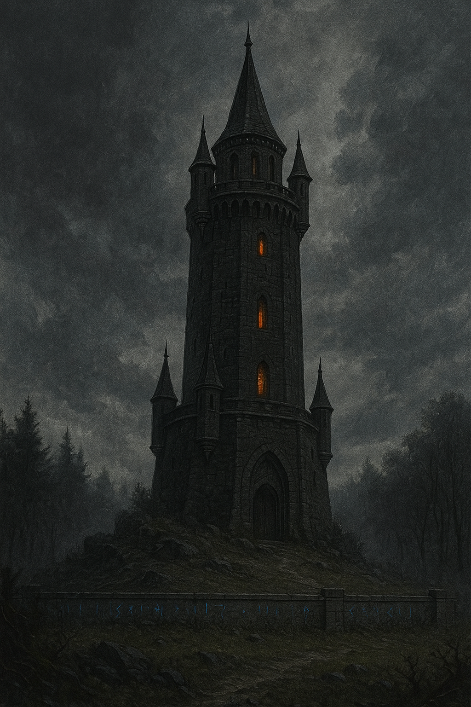

Věž
Věž stojí na mírném návrší mezi vesnicí Pełzacz a okrajem Chvozdu. Okolí kolem ní je podivně prázdné
— ne proto,
že by to někdo nařídil, ale protože to tak prostě zůstalo. Stromy se drží v uctivé vzdálenosti.
Zvěř tudy nechodí. I ptáci, jako by se místu vyhýbali obloukem.
Věž je vysoká asi pět pater. Okolí lemuje zeď, která sice není velká, ale má na sobě spoustu znamení
a run,
která nepouští nehmotné zlo dovnitř ani ven. Tedy jen to, které se neskrývá v lidech.
Mágové a jiní zde jsou často příliš drsní na své studenty aby zocelili své schopnosti a předešlo se
tak velkým katastrofám,
což má za následek často zlomení daných jedinců.
Jsou zdokumentovány případy, kdy ve Věži, studovali někteří lidé, kteří měli nekalé úmysly, avšak
takoví,
u kterých se to projevilo časně byly včas zlikvidováni řádem Inosových paží (vyznavači Innose) a
církví
Žulové panny (trpasličí bohyně/entita mateřské horniny), kteří často vystupují jako řády pro
potírání magických pohrom.
Vzduch kolem zdi je tišší, než by měl být. Zvuk se tam ztrácí. Kroky znějí tlumeně.
Dobrodružství, která se zde odehrála:
Věž na mapě

Věž zblízka
